Palette
Peach cream#efdec9background~35%
Aged paper#e3dacdsurface~10%
Lace white#f0ece9surface~5%
Burgundy#631530primary accent~11%
Deep wine#310e16text ink~6%
Berry magenta#a5205brare accent~2%
Blush pink#d6acb2accent / group~3%
Olive#585e39accent / group~4.5%
Sage-lime#b9b77esecondary green~3%
Forest night#222b1cdark background~45% of ref-3
Sampled from assets/refs (owner-ref-1, owner-ref-3, website ref, lace). Shares are rough. Gaps in styles.css: peach cream canvas, forest night, berry magenta.
Type
Cormorant Garamond 500 - titles, names
Kiara & Betel
The guest list
Cinzel 400 caps, .14em - kickers, labels
Your wedding · Agenda
Inter 400/500 - UI, body
Table 01 · 6 of 8 seated. Names only, short labels.
Pinyon Script - one line only
are getting married
Components
Buttons and field
3px corners. Hover changes colour only.
Do
- Burgundy, blush, olive on warm cream
- Real photos; flat dark overlay for text
- Short labels, small type
- Names, not initials
- Ask Kiara for art; log in ASSETS-NEEDED.md
Don't
- No gradients, glow, grain
- No pills, circles, initials, monograms
- No generated lace, doves, seals, flourishes
- No hover lift or scale
- No amber warnings (use burgundy)
References
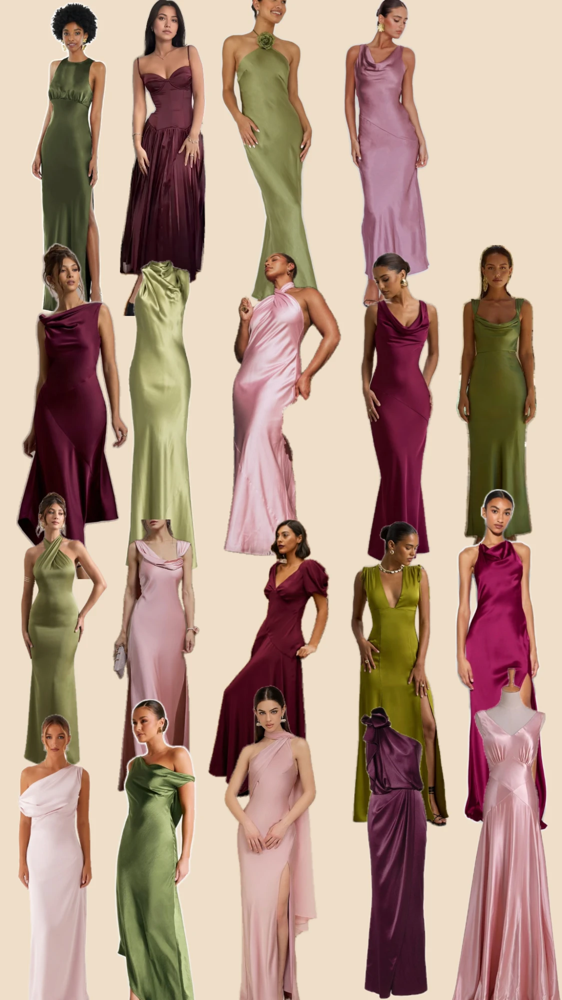
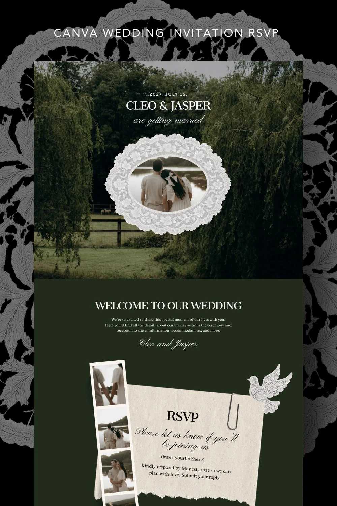

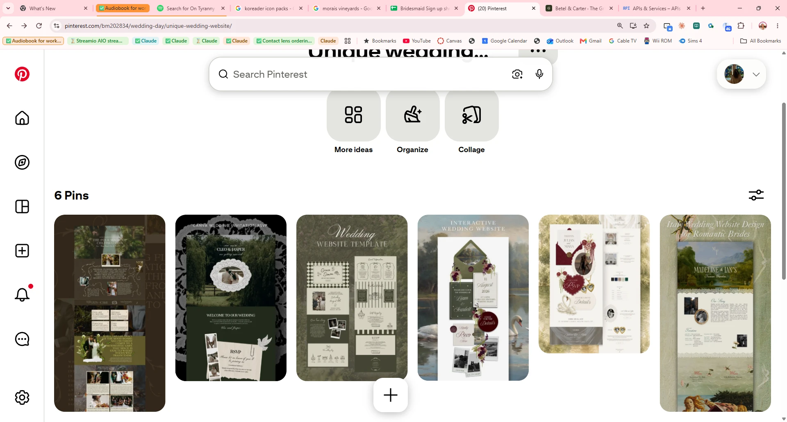
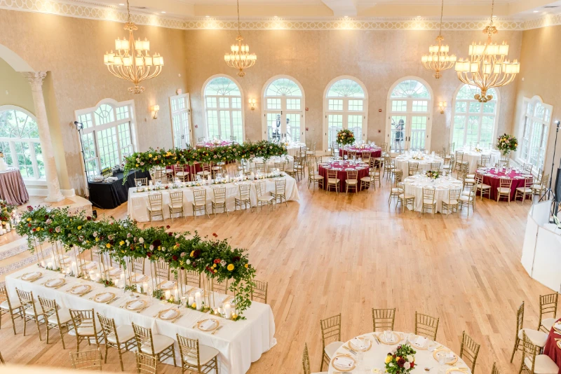
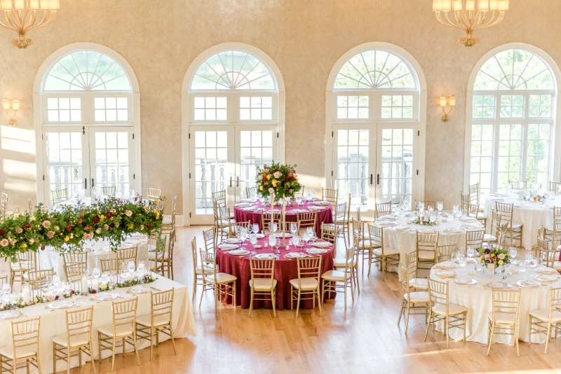
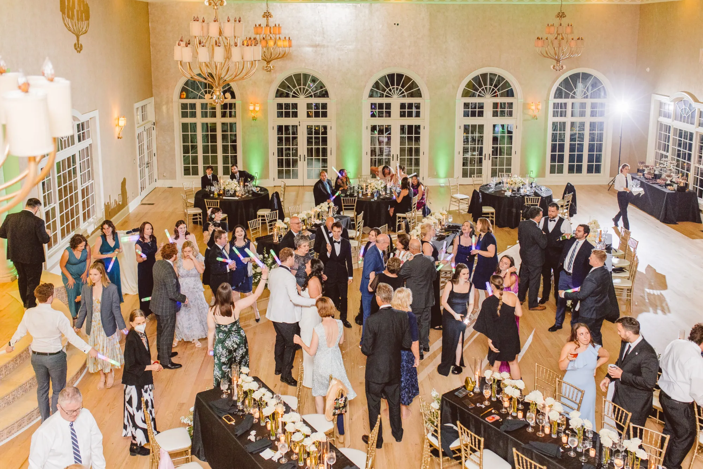
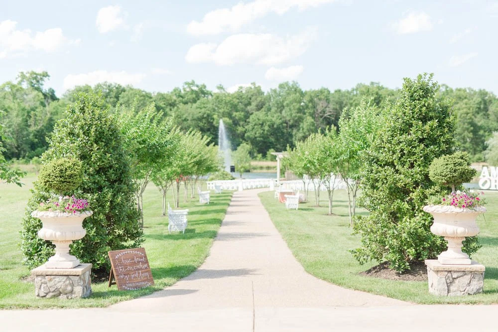
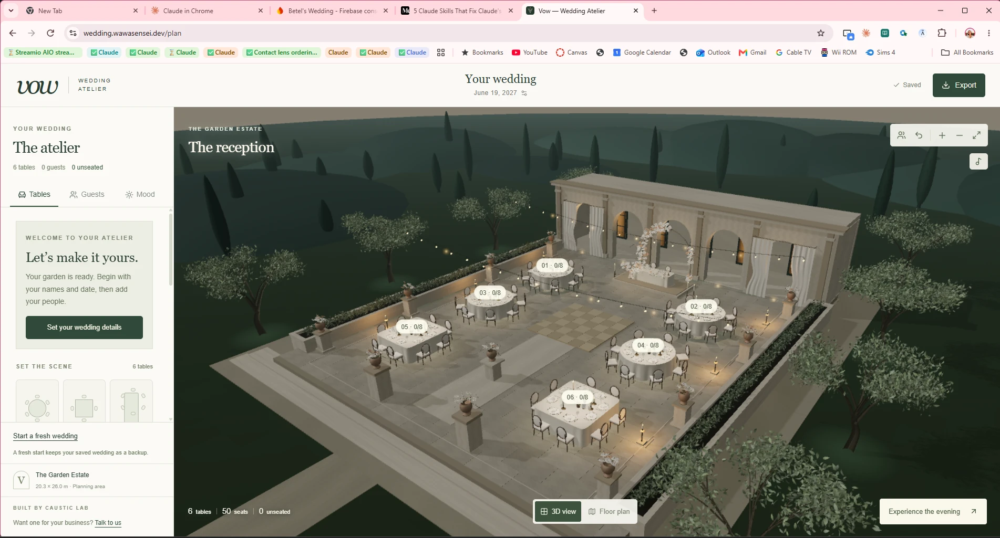
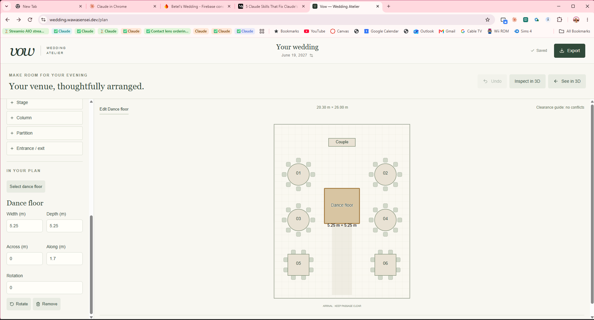
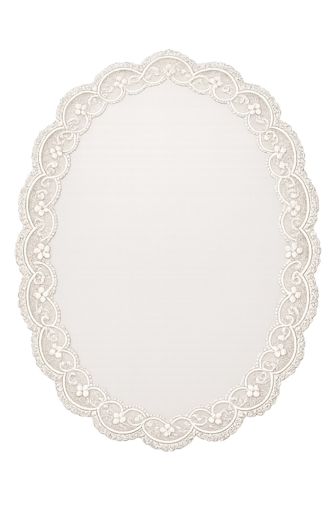
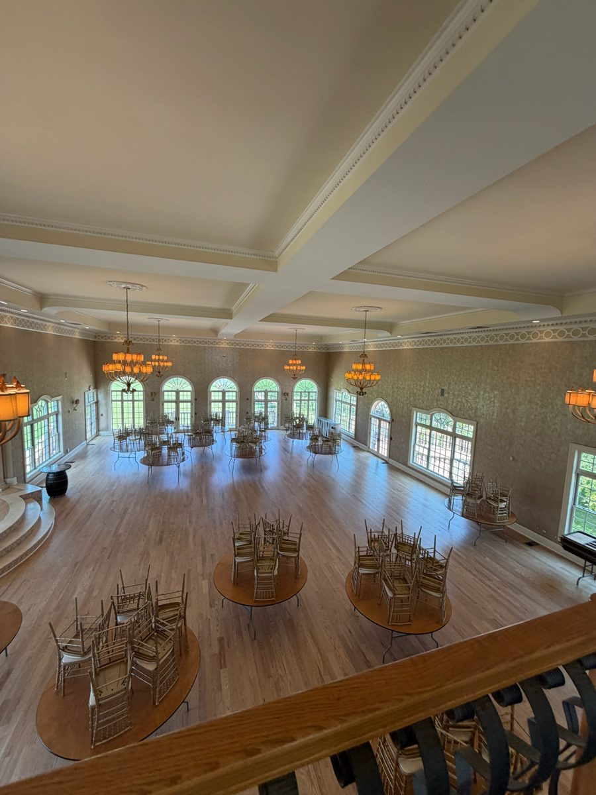